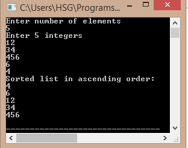

/*C Program for SelectionSort*/
#include<stdio.h>
int main()
{
int array[100], n, c, d, position, swap;
printf("Enter number of elements\n");
scanf("%d", &n);
printf("Enter %d integers\n", n);
for ( c = 0 ; c < n ; c++ )
scanf("%d", &array[c]);
for ( c = 0 ; c < ( n - 1 ) ; c++ )
{
position = c;
for ( d = c + 1 ; d < n ; d++ )
{
if ( array[position] > array[d] )
position = d;
}
if ( position != c )
{
swap = array[c];
array[c] = array[position];
array[position] = swap;
}
}
printf("Sorted list in ascending order:\n");
for ( c = 0 ; c < n ; c++ )
printf("%d\n", array[c]);
return 0;
}
Output:
